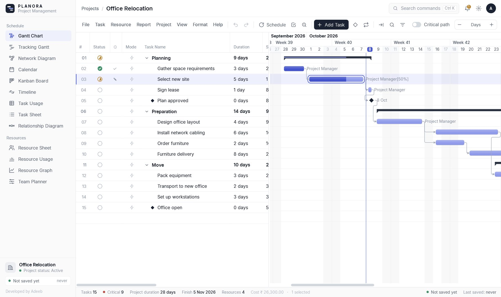

Planora is a free Windows program for planning and controlling projects. It does the same job as Microsoft Project: you list the work, link the tasks, assign people and costs, and Planora calculates the dates, the critical path and the budget.

Project managers, planning engineers, architects, contractors and students who need professional scheduling on a Windows PC without a paid licence.
| Area | Features |
|---|---|
| Planning | Tasks, phases (summary tasks), milestones, durations, four link types with lag and lead, constraints, deadlines, recurring and split tasks |
| Scheduling | Critical Path Method (CPM): earliest and latest dates, total and free slack, critical path; working calendars with holidays |
| Resources and costs | People, equipment, materials and fixed costs; rates; overload detection; automatic resource leveling; budgets |
| Tracking | 11 baselines, % complete, actual dates, Tracking Gantt, progress lines, earned value |
| Views | Gantt Chart, Tracking Gantt, Network Diagram, Calendar, Kanban Board, Timeline, Task and Resource Usage, Resource Graph, Team Planner and more (13 views) |
| Reports and output | 16 built-in reports, a report designer, printing, PDF and image export |
| Files | Opens Microsoft Project .mpp files; opens and saves Microsoft Project XML, Excel, CSV, Primavera P6 and MPX |
| Ease of use | Command search (Ctrl+K), undo/redo of every change, autosave and recovery |
| Part | What it is |
|---|---|
| Language | C# for the logic, XAML for the screens, on Microsoft .NET 8 (WPF) |
| Engine (the “brain”) | About 12,400 lines: scheduling, calendars, resources, costs, reports and file formats. It has no screens, so it can be tested on its own. |
| App (the screens) | About 18,000 lines: windows, menus, Gantt chart, dialogs and views. It shows the engine's results and sends your clicks back to it. |
| Tests | 305 automatic tests; dates checked against three real Microsoft Project files (188 of 188 tasks identical) |
| Installer | One Setup file (118 MB) that includes everything; no administrator rights and no internet needed |
Windows 10 or 11 (64-bit), about 300 MB of disk space. Nothing else to install; works offline.